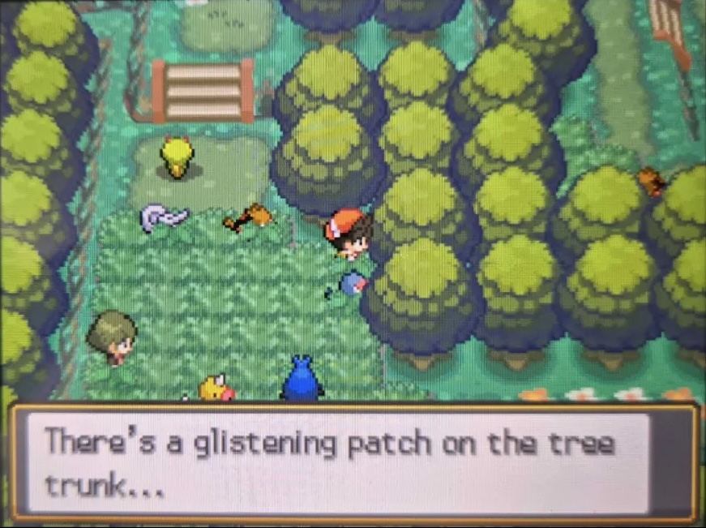

1. Pallet Town: ของขวัญก่อนออกเดินทาง
สถานที่: Pallet Town และบ้านของผู้เล่น
เงื่อนไข: หลังเลือก Starter ให้คุยกับ Mom เพื่อรับ Running Shoes และตัวเลือกฝากเงิน แล้วรับ Town Map จาก Daisy โดยทำสองอย่างนี้ลำดับใดก่อนก็ได้ เกมจะไม่ให้เดินออกทางเหนือจาก Pallet Town ก่อนทำครบ (ผู้เล่น Bulbasaur ใช้เพียงการคุยกับ Mom ก็เปิดของขวัญได้)
| Starter | ผู้ให้ / จุดรับ | ของขวัญ | เงื่อนไข |
|---|---|---|---|
| Pikachu | ชายที่ยืนกับ Eevee ทางเหนือของเมือง ทางตะวันตกเฉียงเหนือของบ้าน Blue เล็กน้อย | Light Ball | ไม่มี |
| Charmander | ชายข้างรั้วทางใต้ ทางตะวันตกเฉียงใต้ของ Oak’s Lab | Charcoal | ไม่มี |
| Bulbasaur | Poliwag ในบ้านผู้เล่น ชั้น 1 ข้างอ่างล้างจานมุมซ้ายบน ใกล้ Mr. Mime | Poliwag Lv. 5 | ต้องมีช่องว่างในทีม และตอบ Yes เมื่อถามว่าจะพา Poliwag ไปด้วยหรือไม่ |
หลังรับของขวัญแล้ว การคุยซ้ำจะได้เพียงบทสนทนาทั่วไป ในข้อมูลเกมมีของขวัญ Poliwhirl Lv. 10 ที่ไม่ได้ถูกนำมาใช้และไม่มี NPC ให้รับ จึงรับได้จริงเฉพาะ Poliwag
2. Viridian City: แบบทดสอบว่าที่ศาสตราจารย์โปเกมอน
สถานที่: บ้านทางตะวันตกเฉียงเหนือของ Viridian Gym ใช้ประตูด้านบน (ทิศเหนือ) ซึ่งอยู่ทางตะวันตกของหญิงที่กังวลเรื่อง Meowth ขโมยของ ประตูด้านล่างนำไปยังห้องของ NPC เปลี่ยนชื่อโปเกมอน
วิธีเริ่ม: คุยกับเด็กชายที่ฝันอยากเป็น Pokémon Professor แล้วตอบ Yes เพื่อเริ่มแบบทดสอบ เขาจะถาม 5 ข้อและบอกเพียงว่ามีคำตอบผิดหรือไม่ โดยไม่ระบุข้อที่ผิด สามารถลองใหม่ได้ทันที
| ข้อ | คำถาม | คำตอบ |
|---|---|---|
| 1 | โปเกมอนมีประเภททั้งหมดกี่ประเภท? | 18 |
| 2 | การโจมตีที่ได้เปรียบด้านประเภทสร้างความเสียหายกี่เท่า? | 2x |
| 3 | ท่าโปเกมอนแบ่งเป็น 3 หมวดหมู่อะไรบ้าง? | Physical, Special, Status |
| 4 | องค์ประกอบหลักของท่ามีอะไรบ้าง? | Type, Power, Accuracy, Effect |
| 5 | ต้องมี Badge กี่อันจึงได้อันดับ Senior Trainer? | 8 |
รางวัล: Exp. Share 1 ชิ้น รับได้ครั้งเดียว
3. Viridian City: Meowth ขโมยของ (Starter Charmander เท่านั้น)
ชาวเมืองแจ้งว่า Meowth แอบเข้าไปขโมยของในบ้านต่าง ๆ คุยกับเขาทางเหนือของเมือง ใกล้ประตูด้านบนของบ้านทางตะวันตกเฉียงเหนือของ Gym หลังผ่านบทสอนจับโปเกมอนบน Route 1 เควสต์จึงเริ่มได้
- คุยกับชาวเมืองเพื่อให้ Meowth ปรากฏตัว
- ไปหา Meowth ทางฝั่งตะวันตกของเมือง ระดับเดียวกับ Pokémon Center ใกล้ครูสอนท่า Super Fang แล้วตอบ Yes เพื่อสั่งสอนมัน
- สู้กับ Meowth ป่า Lv. 5 จะชนะ จับ หรือหนี ก็ได้ เกมตรวจเพียงว่าไม่ได้แพ้ ถ้าหมดสติ Meowth จะยังอยู่ให้ลองใหม่
- กลับไปคุยกับชาวเมืองเพื่อรับรางวัล
รางวัล: Lure Ball 1 ลูก ซึ่งใช้แลกท่า Super Fang กับ Move Tutor ทางตะวันตกของ Viridian ได้
ผู้เล่น Starter อื่นจะไม่พบ Meowth ในอีเวนต์นี้ และชาวเมืองจะพูดเพียงบทสนทนาทั่วไป
4. Viridian City: Pikachu ขโมยอาหาร (Starter Bulbasaur เท่านั้น)
- หลังผ่านบทสอนจับโปเกมอนบน Route 1 คุยกับพนักงานร้านที่ยืนทางตะวันออกของประตู Viridian Mart เขาจะบอกว่ามี Pikachu ขโมยอาหาร
- ไปคุยกับ Pikachu ทางตะวันตกเฉียงใต้ของบ้านที่อยู่เหนือ Pokémon Academy แล้วตอบ Yes มันจะวิ่งหนีไปมุมตะวันตกเฉียงเหนือของเมือง
- ตามไปคุยอีกครั้งและตอบ Yes มันจะวิ่งไปขอบตะวันออกเฉียงใต้ของ Poké Mart ข้างเสาไฟ
- คุยกับมันจากทางเหนือหรือใต้โดยตรงเพื่อเริ่มต่อสู้กับ Pikachu ป่า Lv. 5 จะชนะ จับ หรือหนีก็ได้
- กลับไปหาพนักงานร้านเพื่อรับรางวัล
รางวัล: Lure Ball 1 ลูก
5. Viridian City: Mankey ทำลายไฟถนน (Starter Pikachu เท่านั้น)
- หลังผ่านบทสอนจับโปเกมอนบน Route 1 คุยกับคนดูแลไฟถนนทางตะวันตกเฉียงเหนือของประตู Pokémon Center
- ไปหา Mankey ทางตะวันออกเฉียงใต้ของประตู Gym ข้างเสาไฟ ใกล้ Trainer ที่มี Politoed แล้วตอบ Yes เพื่อหยุดมัน
- ต่อสู้กับ Mankey ป่า Lv. 5 จะชนะ จับ หรือหนีก็ได้
- กลับไปคุยกับคนดูแลไฟถนน
รางวัล: Fast Ball 1 ลูก ใช้แลกท่า Quiver Dance กับ Move Tutor บน Route 2 ได้
6. Viridian City: นักเรียนแลกเปลี่ยน Pokémon Academy
สถานที่: Pokémon Academy อาคารโรงเรียนทางใต้ของบ้านทางตะวันออกเฉียงเหนือของเมือง
เงื่อนไขเวลา: ทำได้ในช่วงต้นเกมเท่านั้น Steven และ Cynthia จะออกจากโรงเรียน และครูจะเปลี่ยนไปสอนบทเรียนของ Earl หลังจากผู้เล่นส่ง Oak’s Parcel และเอาชนะ Blue บน Route 22 ครบทั้งสองอย่าง
- คุยกับครูหน้าห้องเรียนเพื่อรับคำท้าให้ต่อสู้กับนักเรียนแลกเปลี่ยนทั้งสอง
- ต่อสู้กับทั้งสองคน ลำดับใดก่อนก็ได้: Cynthia ใช้ Gible Lv. 5, Riolu Lv. 5, Amaura Lv. 5; Steven ใช้ Beldum Lv. 5, Aron Lv. 5, Tinkatink Lv. 5 ถ้ายังไม่คุยกับครู ทั้งคู่จะคุยเฉย ๆ
- กลับไปคุยกับครู
รางวัล: Ultra Ball 2 ลูก, Level Ball 1 ลูก และ Lure Ball 1 ลูก
อีเวนต์ต่อเนื่อง: Cynthia จะรออยู่ใน Viridian Forest ทางตะวันออกจากทางออกด้านเหนือประมาณ 12 ก้าว ไม่ว่าคุณจะชนะเธอที่ Academy หรือไม่ คุยเพื่อสู้กับ Gible Lv. 9, Riolu Lv. 8 และ Budew Lv. 6 เมื่อชนะจะได้ TM54 False Swipe จำนวน 5 ชิ้น แล้วเธอจะออกจากพื้นที่
7. Route 2: Poké Ball ในโกดัง Team Rocket
สถานที่: บ้านเล็กบน Route 2 East ที่ Team Rocket ใช้เป็นโกดัง มีตำรวจปลอมยืนขวางถนนข้างบ้าน
- ในห้องมี Poké Ball หลายลูก แต่ส่วนใหญ่เป็นเพียงข้อความว่ามีโปเกมอนอยู่ข้างใน ลูกที่เก็บได้จริงอยู่แถวที่สอง ถัดไปทางขวาจากจุดที่ Grunt ยืนตอนเริ่มฉาก เลือก Yes เพื่อรับ
- จะคุยกับ Grunt ก่อนหรือหลังเก็บบอลก็ได้ ถ้าคุยกับเขา เขาจะถามว่าคุณเป็นใคร เลือก “I came to take down Team Rocket” เพื่อเริ่มต่อสู้กับ Grunt แล้วตามด้วย Ariana; เลือก “I got lost and wandered in” เพื่อหลีกเลี่ยงการต่อสู้และเขาจะบอกให้ออกไป
รางวัล: Starter Charmander ได้ Doduo Lv. 20; Starter Pikachu หรือ Bulbasaur ได้ Barboach Lv. 20
ถ้าทีมเต็ม เกมจะแจ้งและกลับมาได้รับภายหลังได้ การแพ้ Ariana ไม่ทำให้หมดสติและฉากเก็บของของ Team Rocket จะดำเนินต่อ แต่การแพ้ Grunt จะทำให้หมดสติ
8. Route 2 East: Charmander ที่ถูกทอดทิ้ง (Starter Pikachu เท่านั้น)
เงื่อนไข: หลังฉาก Team Rocket ใน Viridian Forest ต้องคุยกับ Trainer ใน Pewter City Pokémon Center ซึ่งจะเล่าว่าทิ้ง Charmander ที่ตนเรียกว่า “ขยะ” ไว้ข้างถนน ถ้ายังไม่ได้คุย Charmander จะไม่ยอมให้จับ
- คุยกับ Trainer ใน Pewter Pokémon Center (มีเฉพาะ Starter Pikachu)
- ไปหา Charmander อ่อนแรงทางเหนือของ Route 2 East ใกล้ประตู Viridian Forest ด้านเหนือ แล้วตอบ Yes เพื่อพาไป Pokémon Center
- Nurse Joy จะรักษา Charmander จากนั้นอดีตเจ้าของ Guitarist Del จะปรากฏตัว ต่อสู้กับ Shinx Lv. 12, Swinub Lv. 11 และ Nidoran♂ Lv. 10 เมื่อแพ้เขาจะหนีไป
- คุยกับ Charmander ใน Pokémon Center แล้วตอบ Yes เมื่อถามว่าจะพามันไปด้วยหรือไม่
รางวัล: Charmander Lv. 10
9. Route 2 East: Nidoran♀ และคนทำ Apricorn Ball (Starter Charmander / Bulbasaur)
เงื่อนไข: หลังฉาก Team Rocket ใน Viridian Forest ผู้เล่นที่เลือก Charmander หรือ Bulbasaur จะพบชายกับ Nidoran♀ ที่ถูกทอดทิ้งทางเหนือของ Route 2 East ใกล้ประตู Viridian Forest ด้านเหนือ
- ชายคนนั้นอยากจับ Nidoran♀ แต่ไม่มีบอล ต้องมี Friend Ball ในกระเป๋าไอเทมแล้วตอบ Yes เมื่อเขาขอใช้บอล
- อดีตเจ้าของ Nidoran♀ จะปรากฏตัวและสั่งให้มันกลับไป ก่อนตัดสินใจจะนำมันไปเก็บใน PC เกมจะถามว่าจะหยุดเขาหรือไม่
- ตอบ Yes แล้วต่อสู้กับ Guitarist Del ซึ่งใช้ Shinx Lv. 12, Swinub Lv. 11 และ Nidoran♂ Lv. 10 หลังแพ้ Nidoran♀ จะเลือกอยู่กับชายคนเดิม
รางวัล: ไม่มีไอเทมโดยตรง แต่ชายคนนี้จะย้ายไปบ้านเล็กทางตะวันตกเฉียงใต้ของ Pewter City (ประมาณ 11 ก้าวทางตะวันตกและ 5 ก้าวทางใต้จากประตู Pokémon Center) และทำ Apricorn ของคุณเป็น Apricorn Ball ให้ฟรีนับจากนั้น
Starter Pikachu ไม่มีอีเวนต์ Nidoran♀ นี้ แต่ชายผู้ทำ Apricorn Ball จะอยู่ที่ Pewter ตั้งแต่ต้นเกมและให้บริการได้ตามปกติ
10. Route 2: แฟน Magcargo
สถานที่: Gatehouse ทางเหนือของเส้นทางตะวันออกบน Route 2 ซึ่งเชื่อมไป Route 2 East อย่าสับสนกับ Gatehouse ของ Viridian Forest ที่อยู่ข้างกัน
นำ Magcargo ไว้ในทีมแล้วคุยกับชายที่อยากสัมผัสตัวมัน
รางวัล: Rawst Berry 2 ผล รับได้ครั้งเดียว ชายคนนั้นจะถูกเผา
11. Viridian Forest: Snubbull หนีออกจากบ้าน
- คุยกับเจ้าของ Snubbull ใน Gatehouse ทางใต้ฝั่ง Route 2 เขาจะเสนอเงิน $20,000 ถ้าพา Snubbull กลับมา ก่อนคุยกับเจ้าของ Snubbull จะร้องไห้และยังทำอะไรไม่ได้
- หา Snubbull กลาง Viridian Forest ซึ่งกำลังเล่นกับ Pidgey แล้วคุยกับมัน
- ถ้าตอบ Yes จะถูกพากลับไป Gatehouse และรับเงิน $20,000 เจ้าของจะพูดถึงการฝึกด้วยความหิวหรือความเจ็บปวด ส่วน Pidgey จะถูกปล่อยไว้ตามเดิม
- ถ้าตอบ No, Snubbull จะอยู่กับเพื่อนของมันถาวร ไม่มีรางวัลและไม่สามารถพากลับภายหลัง
12. Viridian Forest: สวนดอกไม้และฝูง Spearow
สถานที่: หญิงที่ยืนข้างแปลงดอกไม้ทางตะวันออกสุดของป่า ทางตะวันออกเฉียงเหนือจากทางเข้าใต้ เดินไปทางตะวันออกผ่าน Trainer ที่ยืนอยู่ใกล้ทางเข้า
ก่อนมี Volcano Badge ให้ตอบ Yes เพื่อช่วยไล่ Spearow จะเริ่ม Double Battle กับ Spearow Lv. 7 (ทีมฝูงมี 3 ตัว) แล้วตามด้วยการต่อสู้กับ Fearow ป่า Lv. 20 ซึ่งเป็นหัวหน้าฝูง การทำให้ Fearow หมดพลัง จับมัน หรือหนี ล้วนถือว่าไล่ฝูงได้สำเร็จ ถ้าแพ้การต่อสู้ใดจะหมดสติ แต่เควสต์ยังเปิดให้ลองใหม่
รางวัล: Honey 2 ชิ้น ใช้กับต้น Honey และ Move Tutor ที่สอน Mega Drain ได้
13. Viridian Forest: ฝาก Pidgeot ไว้กับเธอ (Starter Pikachu เท่านั้น)
เงื่อนไข: Starter Pikachu, มี Volcano Badge แล้ว แต่ยังไม่มี Earth Badge และยังไม่ได้เป็น Champion
หญิงใน Viridian Forest จะขอยืม Pidgeot แม้บทพูดแรกจะเรียกว่า Pidgeotto แต่รับเฉพาะ Pidgeot เท่านั้น เลือก Pidgeot จากทีมและต้องมีโปเกมอนตัวอื่นเหลืออยู่ในทีมอย่างน้อยหนึ่งตัว Pidgeot จะยืนอยู่ข้างเธอในป่า
การรับคืน: หลังเข้าสู่ Hall of Fame แล้ว ให้กลับมาคุยกับเธอโดยมีช่องว่างในทีม
14. Viridian Forest: ต้น Honey และโปเกมอนแมลงประจำวัน
สถานที่: ต้นไม้ที่มีประกายทางตะวันตกเฉียงใต้ของป่า อยู่ทางตะวันตกของทางเข้าด้านใต้ เดินไปยังพงหญ้าสูงใต้บันไดไม้เตี้ย ๆ ยืนที่ขอบด้านตะวันออกของหญ้าแล้วหันหน้าไปทางต้นไม้ทางทิศตะวันออก Move Tutor ที่สอน Mega Drain อยู่ห่างไปทางตะวันตกเฉียงใต้ไม่กี่ก้าว

ตรวจต้นไม้ขณะมี Honey ในกระเป๋าไอเทมแล้วตอบ Yes เพื่อทา Honey (ใช้ 1 ชิ้น) จากนั้นจะต่อสู้กับโปเกมอนแมลง Lv. 15 ทันที โดยชนิดขึ้นกับวันในนาฬิกา DS
| วัน | โปเกมอน |
|---|---|
| Sunday | Scyther |
| Monday | Heracross |
| Tuesday | Pinsir |
| Wednesday | Volbeat |
| Thursday | Nincada |
| Friday | Pineco |
| Saturday | Yanma |
ทำซ้ำได้ตราบใดที่มี Honey ส่วน Move Tutor ที่สอน Mega Drain ทางตะวันตกเฉียงใต้ของต้นไม้ก็คิด Honey 1 ชิ้นเช่นกัน
วิธีหา Honey ในช่วงต้นเกม:
- รับ Honey 2 ชิ้นจากหญิงในเควสต์สวนดอกไม้และฝูง Spearow ก่อนมี Volcano Badge (ครั้งเดียว)
- โปเกมอนป่าบางตัวถือ Honey: Surskit พบในหญ้าตอนกลางคืน 4% และมีโอกาสถือ Honey 50%; Combee พบตอนเช้า 1% และมีโอกาสถือ Honey 5% จับหรือใช้ Thief แล้วนำไอเทมออกจากโปเกมอนในเมนูทีม
เมื่อไปถึง Johto พ่อค้า Honey บน Route 36 ขายชิ้นละ $200
15. Viridian Forest: ช่วยเหลือ Eevee
สถานที่: มุมตะวันออกเฉียงเหนือสุดของป่า ตรงจุดที่ Nurse Joy เคยรักษา Eevee หลังทำอีเวนต์ Team Rocket ที่ Route 2 และใน Viridian Forest แล้ว
คุยกับ Eevee แล้วตอบ Yes เมื่อถามว่า “Eevee seems to really like you. Catch it?”
รางวัล: Eevee Lv. 5 ถ้าตอบ No หรือทีมเต็ม Eevee จะรออยู่และกลับมารับภายหลังได้
16. Pewter City: Sitrus Berry → Hard Stone → TM69
- ไปสวนดอกไม้ของ Anemone บนเนินทางตะวันออกของ Pokémon Center ตอบ Yes เมื่อถามว่าชอบปลูกต้นไม้หรือไม่ จะได้ Sitrus Berry 2 ผล, Berry Pots และ Squirt Bottle ถ้าตอบ No เธอจะแค่แซวและถามใหม่ได้
- คุยกับ Hiker ทางตะวันตกเฉียงใต้ของประตู Poké Mart เขาต้องการ Sitrus Berry 3 ผล แต่จะยอมให้ส่งมอบก็ต่อเมื่อมี Sitrus Berry อย่างน้อย 10 ผลในกระเป๋าไอเทม ตอบ Yes เขาจะรับไป 3 ผลและให้ Hard Stone 2 ชิ้น
- นำ Hard Stone ชิ้นใดก็ได้ไปให้ชายที่อยู่กับ Sudowoodo ทางฝั่งตะวันออกของเมือง แล้วตอบ Yes เพื่อแลก TM69 Rock Polish
แต่ละขั้นตอนรับรางวัลได้ครั้งเดียว และ Hard Stone ยังหาได้จากแหล่งอื่น เช่น Route 36
17. Victory Road: “Blue ตัวจริงอยู่ฝั่งไหน?”
สถานที่: Victory Road ชั้น 1 ระหว่างบท Team Rocket ช่วงท้าย Blue กำลังเผชิญหน้ากับตัวปลอมที่ Team Rocket สร้างขึ้น
- เลือก “The right one is the real Blue”: เป็นคำตอบที่ถูก ต้องสู้กับ Blue ตัวปลอมเท่านั้น จากนั้น Blue จะขอบคุณผู้เล่น ทีมของตัวปลอมมี Blastoise Lv. 97, Arcanine Lv. 96 และตัวอื่น ๆ
- เลือก “The left one…”: เป็นคำตอบผิด จะโจมตี Blue ตัวจริงก่อน (ทีมมี Umbreon Lv. 96, Pidgeot Lv. 97 และตัวอื่น ๆ) แล้วจึงสู้กับตัวปลอม Blue จะโกรธ และเส้นทางความสัมพันธ์ของ Blue สำหรับตัวละครหญิงจะปิด
ตัวอย่างในคู่มือต้นฉบับทีมบางส่วนด้วยเครื่องหมาย … จึงไม่เติมรายชื่อโปเกมอนที่เหลือเอง
18. Victory Road 1F: ไอเทมบอลปลอม (Electrode Lv. 70)
สถานที่: ไอเทมบอลฝั่งตะวันตกของ Victory Road 1F อยู่ระดับเดียวกับตำแหน่งที่ Blue ยืน ห่างไปทางตะวันตกประมาณ 20 ก้าว
ตรวจไอเทมบอลแล้วจะเริ่มต่อสู้กับ Electrode ป่า Lv. 70 ถ้าชนะ จับ หรือหนี ไอเทมบอลจะหายไป ถ้าแพ้ ตัวละครจะหมดสติและบอลยังอยู่ให้กลับมาลองใหม่ได้ (คู่มือต้นฉบับระบุว่าทดสอบกรณีหนีและแพ้ด้วย Emulator)
19. Romance route: สารภาพรักใน Victory Road, นัดของ Yellow และการอยู่ร่วมบ้าน
ส่วนนี้ครอบคลุมเฉพาะเหตุการณ์ในแผนที่ของบทนี้ (Victory Road, Viridian City และบ้านผู้เล่น) ส่วนการเปิด Romance route การเลือกคู่ใน Dream World และเงื่อนไขที่ทำให้ตัวละครหมดสิทธิ์ ดูรายละเอียดได้จาก คู่มือต้นฉบับ ในต้นฉบับ
19.1 สารภาพรักใน Victory Road
ระหว่างบทสุดท้าย ก่อนเข้าหอเกียรติยศครั้งสุดท้าย หลังสู้กับเพื่อนร่วมทางแต่ละคน พวกเขาจะยืนรอเพื่อรักษาทีม คุยกับคนที่ต้องการอีกครั้งเพื่อดูฉากสารภาพรัก ถ้าเปิด Romance route แล้ว ตัวละครนั้นยังไม่ถูกตัดสิทธิ์ และผู้เล่นยังไม่เคยสารภาพกับใครมาก่อน ฉากจะฟื้นฟูทีม ยกเว้นฉากของ Gold
| ตำแหน่ง | คู่ | เพศตัวละครผู้เล่น |
|---|---|---|
| ชั้น 1 ทางตะวันตกเฉียงเหนือ ลงจากบันไดขึ้นชั้น 2 มาประมาณ 12 ก้าว | Yellow | ชาย |
| ชั้น 1 กลางฝั่งตะวันออก ตรงจุดที่ Blue ยืนกับ Blastoise หลังเลือก Blue ตัวจริง | Blue | หญิง และต้องเลือกคำตอบถูก |
| ชั้น 2 ฝั่งตะวันตก ใกล้ทางตะวันออกของบันไดลงชั้น 1 | Green / Red | ได้ทั้งสองเพศ (Green สำหรับชาย, Red สำหรับหญิง) |
| ชั้น 2 ฝั่งตะวันออก ห่างจากบันไดขึ้นชั้น 3 ไปทางตะวันออกไม่กี่ก้าว | Gold | หญิง |
Misty (Cerulean Gym), Steven และ Cynthia (ทางลาด Indigo Plateau), Silver และ Crystal (Victory Road 3F) มีฉากสารภาพรักของตนเองด้วย แต่ละฉากใช้โอกาสสารภาพหนึ่งครั้งเช่นกัน
19.2 นัดของ Yellow หลัง Hall of Fame ครั้งสุดท้าย
หลังเข้าหอเกียรติยศครั้งสุดท้าย Yellow จะรออยู่ทางใต้ของ Mart ใน Viridian City เธอจะเสนอกิจกรรมต่อเมื่อผู้เล่นเข้าหอเกียรติยศครั้งสุดท้ายแล้ว สารภาพรักกับใครสักคนแล้ว และยังไม่ได้ตัดสิทธิ์ Yellow ถ้าไม่ครบ เธอจะพูดเพียงว่าตอนนี้เป็น Ace Trainer แล้ว
- Let’s have a battle: ต่อสู้แบบ Singles หรือ Doubles กับ Yellow (ตัวอย่างทีมมี Pikachu Lv. 92, Omastar Lv. 91 และตัวอื่น ๆ) ทำซ้ำได้
- Let’s go for a walk (date 1): เดินทางไปยอด Mt. Silver และที่พักบ่อน้ำพุร้อน ฟื้นฟูทีมให้
- Let’s go for a walk (date 2): ทำได้หลัง date 1 ไป Resort Zone แล้วต่อสู้ Multi Battle 4 ครั้งติดกันโดย Yellow อยู่ทีมเดียวกัน ทีมจะได้การรักษาก่อนเริ่มและหลังจบครั้งสุดท้าย แต่ไม่ฟื้นระหว่างการต่อสู้ ถ้าแพ้ ตัวละครจะหมดสติและต้องเล่นนัดนี้ใหม่
- I want you to meet my mom: หลัง date 2 Yellow จะไป Pallet Town พบ Mom แล้วออกจาก Viridian ไปตลอด แต่เนื่องจากข้อผิดพลาดของ ROM ฉากนี้แสดงเวอร์ชันของ Cynthia ไม่ว่าคู่ที่เลือกไว้จะเป็นใคร (คู่มือต้นฉบับระบุว่าผู้จัดทำทดสอบด้วย Emulator โดยเลือก Yellow แล้วพบว่า Cynthia ปรากฏตัว)
นัดของ Cynthia ดำเนินเรื่องคล้ายกันที่ Pokémon Academy ใน Viridian City ส่วนคู่คนอื่นมีนัดในเมืองของตัวเอง ความคืบหน้าของนัดใช้ร่วมกันทุกคู่ ดังนั้นนับเฉพาะนัดของคู่ที่เลือกเท่านั้น
19.3 อยู่ร่วมบ้าน
หลังฉากพบ Mom คู่รักควรย้ายเข้ามาอยู่ในบ้านของผู้เล่น และมีตัวเลือก “Rest in my room” ซึ่งใช้ Mail แต่ใน ROM ต้นฉบับ ขั้นตอนนี้ถูกบล็อกสำหรับผู้เล่นทุกคน: ตรวจ PC ชั้นบนแล้วไม่มีอะไรเกิดขึ้น (คู่มือต้นฉบับระบุว่าทดสอบกรณีนี้ด้วย Emulator)
ข้อผิดพลาดเพิ่มเติม: ระบบนัดตรวจเพียงว่าผู้เล่นยังไม่ตัดสิทธิ์คู่รักและเคยสารภาพกับใครสักคน ไม่ได้ตรวจว่าคนที่สารภาพเป็นคู่เดียวกับที่ไปนัด
20. Viridian City: โปเกมอนตัวแรกของ Yellow (Virtue trial ของ Gym)
สถานที่: Yellow เด็กหญิงที่ยืนกับลุงและ Doduo ทางใต้ของ Viridian Mart
เควสต์เปิดให้ทุก Starter หลัง Viridian Gym กลับมาเปิดอีกครั้ง ก่อนหน้านั้นชายที่หน้าประตู Gym จะบอกว่า Giovanni ไม่อยู่ Gym จะเปิดหลังผ่านการทดสอบท่าไม้ตายของ Granny Mae บน Two Island และ Blue บอกว่าจะไป Viridian Gym
- กลับไปคุยกับชายที่อยู่ด้านในประตู Gym โดยยืนตรงหน้าเขาจากทางประตู เขาจะทำหน้าที่เป็นผู้ทดสอบ Virtue ถ้าคุยจากด้านข้าง เขาจะพูดเพียงว่าคุณมีคุณธรรมและจะไม่เริ่มเหตุการณ์
- เขาจะบอกให้ช่วยคนใน Viridian City ไปคุยกับ Yellow แล้วตอบ Yes เมื่อถามว่าจะช่วยเด็กหญิงที่ต้องการโปเกมอนหรือไม่
- ต้องมี Poké Ball ธรรมดาในกระเป๋าไอเทม 1 ลูก บอลจะถูกนำไปให้ Yellow ถ้าไม่มี ตัวละครจะออกไปซื้อ ให้ค่อยกลับมาคุยอีกครั้ง
- ถูกพาไป Route 2 และต่อสู้กับ Rattata Lv. 5 ซึ่งเป็นการต่อสู้ที่ต้องชนะ Yellow จะโยนบอลจับ Rattata ถ้าแพ้ ตัวละครจะหมดสติและบอลหาย ต้องนำ Poké Ball อีกลูกมาคุยกับ Yellow ใหม่
- กลับ Viridian แล้วรับของขอบคุณจาก Yellow
รางวัล: Big Pearl 1 ชิ้น และผู้ทดสอบจะอนุญาตให้ผ่านไปยังขั้นต่อไปของ Gym
นี่คือการทดสอบด่านแรกของ Gym หลังจากนี้จะเป็น Wisdom quiz และ Skill trial เรื่องราวของ Yellow ยังดำเนินต่อในอีเวนต์ช่วยเหลือใน Viridian Forest
21. Viridian Gym: แบบทดสอบ Wisdom (ผ่านได้ 2 วิธี)
สถานที่: ผู้ทดสอบคนที่สองภายใน Viridian Gym
มีคำถาม 5 ข้อ ถ้าตอบผิดแม้แต่ข้อเดียว เขาจะถามต่อจนครบแล้วไม่ให้ผ่าน โดยไม่บอกว่าข้อไหนผิด สามารถลองใหม่ได้ทันที มีชุดคำตอบที่ผ่านได้ 2 แบบ
ชุดคำตอบแบบตรงไปตรงมา
| คำถาม | คำตอบที่ผ่าน |
|---|---|
| ทำไมคุณจึงอยากเป็น Pokémon Trainer? | It’s my childhood dream |
| คุณคิดว่าการจับโปเกมอนขึ้นอยู่กับอะไร? | Mutual trust |
| ในฐานะ Trainer กุญแจสำคัญในการชนะคู่ต่อสู้คืออะไร? | Bonds with Pokémon |
| คุณมองโปเกมอนอย่างไร? | Partners in battle หรือ Family I live with |
| อะไรสำคัญที่สุดในการรวมองค์กรใหญ่อย่าง Pokémon League? | Shared ideals |
ชุดคำตอบของ Team Rocket
| คำถาม | คำตอบ |
|---|---|
| ทำไมอยากเป็น Pokémon Trainer? | To make money |
| การจับโปเกมอนขึ้นอยู่กับอะไร? | Force and conquest |
| กุญแจในการเอาชนะคู่ต่อสู้คืออะไร? | Powerful Pokémon |
| คุณมองโปเกมอนอย่างไร? | Tools for my goals |
| อะไรสำคัญที่สุดในการรวม Pokémon League? | Big cash rewards |
ทั้งสองชุดถือว่าผ่านเหมือนกัน และจะได้อนุญาตให้ไปยัง Skill trial และพบ Giovanni
22. Pallet Town: Lance มาเยี่ยมบ้าน (หลัง Hall of Fame ครั้งสุดท้าย)
เงื่อนไข: ทุก Starter ทำได้หลังเข้าหอเกียรติยศครั้งสุดท้าย ซึ่งเป็นครั้งหลังเอาชนะ Giovanni ที่ League HQ ฉากจะเริ่มอัตโนมัติเมื่ออยู่ชั้นล่างของบ้านใน Pallet Town เควสต์หลังจบเกมหลายรายการในบทต่อ ๆ ไปจะรอให้ฉากนี้เกิดก่อน
- Mom ถามว่าฟื้นตัวจากการต่อสู้กับ Team Rocket แล้วหรือยัง และชวนดูถ่ายทอดสดคำแถลงของ President Goodshow ทางโทรทัศน์ เขาจะรายงานเหตุการณ์ Team Rocket
- กลับถึงบ้านแล้ว Lance จะแวะมา เขาได้รับมอบหมายจาก President Goodshow ให้นำไอเทมระดับตำนานที่ยึดได้จากสมาชิก Team Rocket ที่ถูกจับมาให้ผู้เล่น
- ผู้เล่นบอก Mom ว่าจะออกเดินทางอีกครั้ง เพื่อตามจับโปเกมอนระดับตำนานที่กระจายอยู่ตามภูมิภาคต่าง ๆ
รางวัล: Key Item 7 ชิ้น อย่างละ 1 ชิ้น
| ไอเทม | ใช้สำหรับ |
|---|---|
| Silver Wing | Lugia ที่ Whirl Islands |
| Rainbow Wing | Ho-Oh ที่ Bell Tower |
| Red Orb | Groudon ที่ Mt. Moon; เมื่อมี Blue Orb ร่วมด้วย ใช้กับ Deoxys บน Six Island |
| Blue Orb | Kyogre ที่ Seafoam Islands |
| Jade Orb | Rayquaza ที่ Sky Pillar Peak |
| Adamant Orb และ Lustrous Orb | Dialga, Palkia และ Giratina |
ผลเพิ่มเติมหลังฉาก:
- Articuno กลับไปอยู่ที่ Seafoam Islands และสามารถจับได้
- Cresselia และ Darkrai กลับไปอยู่ใน Dream World
- สามารถพบ Dialga, Palkia และ Giratina ได้อีกครั้ง และ Fallen Red Star บน Six Island จะกลับมาเพื่อเปิดทางไป Deoxys
- เตรียมฉากที่ Burned Tower ซึ่งมี Prof. Hale และ Legendary Beasts
หมายเหตุด้านความถูกต้อง
- ฉบับนี้แปลและเรียบเรียงข้อมูลสำหรับผู้เล่นจากหน้าอังกฤษที่ลิงก์ไว้ด้านบน ไม่ได้แปลรายละเอียดไฟล์สคริปต์และ flag ภายในทั้งหมด เพราะข้อมูลเหล่านั้นเป็นบันทึกทางเทคนิคมากกว่าขั้นตอนเล่น
- เมื่อแหล่งตามคู่มือต้นฉบับเหตุการณ์ใดผ่านการทดสอบใน Emulator หรือเป็นข้อผิดพลาดของ ROM จะระบุไว้ในเนื้อหา ไม่กล่าวอ้างว่าผู้จัดทำฉบับไทยทดสอบเอง
- รายชื่อทีมต่อสู้ที่ต้นฉบับแสดงไม่ครบจะไม่เติมสมาชิกที่เหลือจากการคาดเดา
- คำว่า “หมดสติ” ใช้แทนผลแพ้การต่อสู้ที่เกมพากลับไปยังจุดรักษา Pokémon Center
แหล่งอ้างอิงหลัก: Origin HeartGold English Guide — Pallet Town to Pewter City ↗